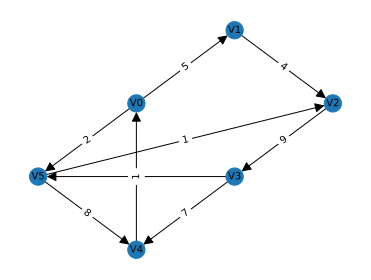

Concept#
Introduction#
Graphs are one of the most versatile and widely used data structures in computer science. A graph is a collection of interconnected objects, where each object is capable of maintaining an arbitrary number of connections to other objects. These objects are typically referred to as vertices (or nodes), and the connections between them are called edges (or arcs).
Unlike arrays, which are linear and have a fixed size, graphs are non-linear and can grow or shrink dynamically. This flexibility allows graphs to represent complex relationships between different entities, making them suitable for a wide range of applications.
In a graph, each vertex has a unique identifier, and each edge connects two vertices. Depending on the nature of the connections, graphs can be classified as either directed or undirected. In a directed graph, each edge has a direction, meaning it goes from one vertex to another. In contrast, edges in an undirected graph have no direction, and they simply connect two vertices.
Graphs are particularly useful for representing and solving problems that involve relationships or interactions between entities. Some common use cases for graphs include:
Social Networks: Each user can be represented as a vertex, and friendships or connections between users can be represented as edges. Social networks like Facebook and Twitter are examples of this use case.
Web Pages: Each web page can be a vertex, and hyperlinks between pages can be edges. This is the fundamental concept behind Google’s PageRank algorithm.
Transport Networks: Locations such as cities or intersections can be vertices, and roads or routes connecting these locations can be edges. This is the underlying principle behind navigation services like Google Maps.
Dependency Trees: In software engineering, graphs can represent dependencies between different parts of a system. Each part is a vertex, and dependencies are edges. This is commonly used in build systems like Make and package managers like npm.
Despite their complexity, graphs offer a powerful way to model and solve complex problems in computer science and many other fields. A deep understanding of how they work is key to designing efficient algorithms and systems. For more details about graphs, you can visit Wikipedia.
Definition#
Definition 214 (Undirected Simple Graph)
An Undirected Graph is a specific type of mathematical structure that is used extensively in the field of computer science and mathematics. It is defined as an ordered pair \(G=(V, E)\), where:
\(V\) represents a set of vertices (also referred to as nodes or points). Each vertex is a distinct entity within the graph.
\(E \subseteq \left\{\left\{x, y \right\} \mid x, y \in V \land x \neq y\right\}\) is a set of edges (also known as links or lines). Each edge in this set is an unordered pair of vertices, denoted as \(\{x, y\}\), where \(x\) and \(y\) are distinct vertices from the set \(V\) (\(x, y \in V\) and \(x \neq y\)). This means that each edge connects two different vertices.
This definition pertains specifically to an Undirected Simple Graph. In such a graph, each edge has no orientation, meaning it doesn’t point from one vertex to another but simply connects them.
Definition 215 (Directed Simple Graph)
A Directed Graph or Digraph is another common type of graph where edges have orientations. In the strictest sense, a directed graph is an ordered pair \(G=(V, E)\), where:
\(V\) is a set of vertices (also referred to as nodes or points). Each vertex is a unique entity within the graph.
\(E \subseteq\left\{(x, y) \mid(x, y) \in V^2 \land x \neq y\right\}\) is a set of edges (also known as directed edges, directed links, directed lines, arrows, or arcs). Each edge in this set is an ordered pair of vertices, denoted as \((x, y)\), where \(x\) and \(y\) are distinct vertices from the set \(V\) (\(x, y \in V\) and \(x \neq y\)). This means that each edge points from one vertex to another.
This definition pertains specifically to a Directed Simple Graph. In such a graph, each edge has a direction, indicating a one-way relationship between two vertices.
In set theory and graph theory, \(V^n\) denotes the set of \(n\)-tuples of elements of \(V\), that is, ordered sequences of \(n\) elements that are not necessarily distinct. Thus, \(V^2\) is the set of all 2-tuples \((x, y)\) where \(x\) and \(y\) are in \(V\).
Example#
Let’s consider a running example to understand these definitions better. Suppose we have the below graph.

We will use this graph to illustrate the concepts discussed in this chapter.
Common Notations#
Vertex#
A vertex is a fundamental part of a graph. It can have a name, which we will call the “key”. A vertex may also have additional information, which we will call the “payload”.
For example, in the graph represented above, the vertices are
Each element in this set (\(v_0, v_1, v_2, v_3, v_4, v_5\)) is a vertex in the graph.
Edge#
An edge is another fundamental part of a graph. An edge connects two vertices to show that there is a relationship between them. Edges may be one-way or two-way. If the edges in a graph are all one-way, we say that the graph is a “directed graph” or a “digraph”.
In the above graph, the edges can be represented as:
Here, each pair of vertices represents an edge in the graph. For example, \((v_0, v_1)\) is an edge connecting vertex \(v_0\) to vertex \(v_1\).
Weight#
Edges may be weighted to show that there is a cost to go from one vertex to another. For example, in a graph of roads that connect one city to another, the weight on the edge might represent the distance between the two cities.
In the graph above, we can add another element to the edge pair that indicates the weight. For example, the edge between \(v_0\) and \(v_1\) has a weight of 5 and can be written as \((v_0, v_1, 5)\). So, our set of edges is now:
Path#
A path in a graph is a sequence of vertices that are connected by edges. Formally, we would define a path as \(w_1, w_2, \ldots, w_n\) such that \((w_i, w_{i+1}) \in E\) for all \(1 \leq i \leq n-1\). The unweighted path length is the number of edges in the path, specifically \(n−1\). The weighted path length is the sum of the weights of all the edges in the path.
For example, in our graph, the sequence \(v_0 \to v_1 \to v_2\) is a path.
Cycle#
A cycle in a directed graph is a path that starts and ends at the same vertex. A graph with no cycles is called an acyclic graph. A directed graph with no cycles is called a directed acyclic graph or a DAG.
In the graph represented above, the sequence \(v_0 \to v_1 \to v_2 \to v_3 \to v_4 \to v_0\) is a cycle. This is because it starts and ends at the same vertex, \(v_0\).
Intuition#
Consider the distinction between social networking platforms like Facebook and Twitter to understand the differences between undirected and directed graphs.
On Facebook, when you send a friend request and it’s accepted, the friendship is mutual. You’re friends with them, and they’re friends with you. This bilateral connection symbolizes an undirected graph, as the relationship between two nodes (you and your friend) is symmetric, meaning it goes both ways.
On the other hand, Twitter operates differently. If you follow someone on Twitter, that person isn’t obligated to follow you back. This creates a one-sided relationship, which is the premise of a directed graph. In this type of graph, the relationship between two nodes (you and the person you’re following) isn’t necessarily symmetric, meaning it might only go one way.
Through these examples, we can understand how the concepts of directed and undirected graphs apply in real-world scenarios.
Edge List#
An edge list is a straightforward and common way to represent a graph. In an edge list, the graph is represented as a simple list of its edges. Each edge is an ordered tuple of vertices. If the graph has weighted edges, each tuple also includes the weight of the edge.
For a graph with vertices
and edges
The edge list representation would be:
In this representation, each tuple signifies an edge from the first vertex to the second vertex, with the corresponding weight. For example, \((v_0, v_1, 5)\) signifies an edge from \(v_0\) to \(v_1\) with weight \(5\). Note that the edge list representation does not include any information about the vertices in the graph. This is because the vertices can be inferred from the edges.
So to recap, the edge list uses an array as the underlying structure, and each element in the array is a tuple (or list) of vertices and weight. The size of the array is the number of edges in the graph, denoted as \(\|E\|\).
The figure below shows the edge list representation of the running example.
E = []
E.append(['v0', 'v1', 5])
E.append(['v0', 'v5', 2])
E.append(['v1', 'v2', 4])
E.append(['v2', 'v3', 9])
E.append(['v3', 'v4', 7])
E.append(['v3', 'v5', 3])
E.append(['v4', 'v0', 1])
E.append(['v4', 'v5', 8])
E.append(['v5', 'v2', 1])
pprint(E)
[ │ ['v0', 'v1', 5], │ ['v0', 'v5', 2], │ ['v1', 'v2', 4], │ ['v2', 'v3', 9], │ ['v3', 'v4', 7], │ ['v3', 'v5', 3], │ ['v4', 'v0', 1], │ ['v4', 'v5', 8], │ ['v5', 'v2', 1] ]
Advantages#
Space-efficient: An edge list representation uses space proportional to the number of edges \(\|E\|\), rather than the square of the number of vertices \(\|V\|\). This makes it more space-efficient for sparse graphs where the number of edges is much less than \(\|V\|^2\). For example, if you have a graph of social network connections where each person is only connected to a small number of people, the edge list representation would be more space-efficient than an adjacency matrix.
Simplicity: The edge list representation is simple and straightforward. It consists of a list of tuples, with each tuple representing an edge and its vertices. Unlike the adjacency matrix which requires a two-dimensional matrix, or adjacency list that requires a dictionary of lists, the edge list does not require complex data structures.
Convenient for certain algorithms: Some graph algorithms such as Kruskal’s algorithm for finding a minimum spanning tree work with edge lists directly. These algorithms typically require the ability to consider each edge individually and in isolation, a task for which the edge list representation is perfectly suited.
Disadvantages#
Slow lookups: In an edge list, checking whether a specific edge exists between two vertices can be slow. Unlike the adjacency matrix, where this operation is \(\mathcal{O}(1)\), you need to traverse the list of edges which takes \(\mathcal{O}(\|E\|)\) time. This could be significant if you have a graph with a high number of edges and need to perform this operation frequently.
Inefficient for neighbor queries: If you need to frequently find all nodes adjacent to a specific node, an edge list can be inefficient. You would need to iterate through all the edges, checking if the given node is part of each edge. In contrast, an adjacency list provides this information directly and efficiently.
Inefficient edge insertions and deletions: If you need to dynamically add or remove edges, the edge list representation can be inefficient. Inserting or deleting edges requires traversing the list to find the appropriate spot or edge, which takes \(\mathcal{O}(\|E\|)\) time.
Potentially more space-consuming for dense graphs: For dense graphs, where the number of edges is close to \(\|V\|^2\), an edge list may use more space than an adjacency matrix. For example, in a graph where each vertex is connected to every other vertex, the adjacency matrix would use less space as it stores this information compactly in a two-dimensional array.
Summary#
Similar to adjacency lists and adjacency matrices, the choice of whether to use an edge list depends on the specifics of your use case and the characteristics of the graph you’re working with. Edge lists can be a good choice when you have a sparse graph and your main operation involves iterating through all edges.
Implementation#
TODO.
Adjacency Matrix#
An adjacency matrix represents a finite graph using a square matrix. This matrix contains entries that reveal whether pairs of vertices in the graph are adjacent. For each pair of vertices in the adjacency matrix, the matrix entry at the position \((i,j)\) indicates the presence or absence of an edge between vertices \(i\) and \(j\) with either a \(1\) or \(0\).
In a simple graph without self-loops, the diagonal of the adjacency matrix should contain only \(0\)s. For undirected graphs, the adjacency matrix exhibits symmetry.
Let’s elucidate this with the running directed graph example:
Consider a graph \(G = (V, E)\), where:
\(V\) is the set of vertices defined as:
\[ V = \{v_0, v_1, v_2, v_3, v_4, v_5\} \]\(E\) is the set of edges defined as:
\[\begin{split} \begin{align*} E = \{&(v_0, v_1, 5), \\ &(v_0, v_5, 2), \\ &(v_1, v_2, 4), \\ &(v_2, v_3, 9), \\ &(v_3, v_4, 7), \\ &(v_3, v_5, 3), \\ &(v_4, v_0, 1), \\ &(v_5, v_4, 8), \\ &(v_5, v_2, 1)\} \end{align*} \end{split}\]
The adjacency matrix \(\boldsymbol{A}\) for graph \(G\) is a \(6\times6\) matrix, given the graph has six vertices. In this matrix, \(\boldsymbol{A}_{i,j}\) represents the weight of the edge from vertex \(v_i\) to vertex \(v_j\), if this edge exists. If there’s no edge between these vertices, \(\boldsymbol{A}_{i,j}\) equals \(0\).
The adjacency matrix for our graph becomes:
In this matrix \(\boldsymbol{A}\), the entry at the \(i\)th row and \(j\)th column corresponds to the weight of the edge from vertex \(v_i\) to vertex \(v_j\). If an edge doesn’t exist, the corresponding weight is 0.
The adjacency matrix plays a crucial role in many graph algorithms in computer science. For instance, it finds application in the Floyd–Warshall algorithm, which determines the shortest paths in a weighted graph. Other uses include calculating the number of walks in a graph and quickly verifying whether two nodes are connected.
The figure below illustrates the adjacency matrix for our running example graph.
# Define your PrettyTable
A = PrettyTable()
# Add field names (column headers)
A.field_names = ["", "v0", "v1", "v2", "v3", "v4", "v5"]
# Add rows of data
A.add_row(["v0", 0, 5, 0, 0, 0, 2])
A.add_row(["v1", 0, 0, 4, 0, 0, 0])
A.add_row(["v2", 0, 0, 0, 9, 0, 0])
A.add_row(["v3", 0, 0, 0, 0, 7, 3])
A.add_row(["v4", 1, 0, 0, 0, 0, 0])
A.add_row(["v5", 0, 0, 1, 0, 8, 0])
# Print the table
pprint(A)
+----+----+----+----+----+----+----+ | | v0 | v1 | v2 | v3 | v4 | v5 | +----+----+----+----+----+----+----+ | v0 | 0 | 5 | 0 | 0 | 0 | 2 | | v1 | 0 | 0 | 4 | 0 | 0 | 0 | | v2 | 0 | 0 | 0 | 9 | 0 | 0 | | v3 | 0 | 0 | 0 | 0 | 7 | 3 | | v4 | 1 | 0 | 0 | 0 | 0 | 0 | | v5 | 0 | 0 | 1 | 0 | 8 | 0 | +----+----+----+----+----+----+----+
Advantages#
Fast Edge Existence Check: In an adjacency matrix, the existence of an edge between two vertices can be checked in \(\mathcal{O}(1)\) time. This makes it particularly useful for algorithms that require frequent edge lookups.
Quick Neighbor Queries: Finding all nodes adjacent to a particular node can be done in \(\mathcal{O}(\|V\|)\) time, where \(\|V\|\) is the number of vertices in the graph.
Convenient for Dense Graphs: The adjacency matrix representation is space-efficient for dense graphs, where the number of edges is close to \(\|V\|^2\). This is because the matrix uses space proportional to the square of the number of vertices, which in the case of dense graphs, is usually close to the number of edges.
Disadvantages#
Space Inefficient for Sparse Graphs: For sparse graphs, where the number of edges is much less than \(\|V\|^2\), an adjacency matrix may use more space than necessary, making it less efficient than other representations like edge lists or adjacency lists.
Slow Edge Insertions and Deletions: Adding or removing edges in an adjacency matrix is relatively slow and inefficient. These operations can take up to \(\mathcal{O}(\|V\|^2)\) time in the worst-case scenario, as a new matrix of size \(\|V\|^2\) may need to be created.
Inefficient for Iterating Over All Edges: If you need to iterate over all edges, an adjacency matrix can be inefficient, as it would require iterating over \(\|V\|^2\) entries to find \(\|E\|\) edges. This is slower than both the edge list and adjacency list representations.
Summary#
The choice to use an adjacency matrix, like edge lists or adjacency lists, largely depends on the specific requirements of your use case and the characteristics of the graph you’re working with. An adjacency matrix could be a good choice if you’re dealing with dense graphs, or if your operations mostly involve checking the existence of edges or finding adjacent nodes.
Implementation#
TODO.
Adjacency List#
The adjacency list is another common and popular way to represent a graph. In an adjacency list, each vertex of the graph is associated with the collection of its neighboring vertices or edges. This representation can be a linked list, array, or any other abstract data type that can represent a collection of items. Let’s illustrate this with our directed, weighted graph:
Consider a graph with vertices
and edges
An adjacency list representation of the graph would look like this:
v0: (v1, 5), (v5, 2) v1: (v2, 4) v2: (v3, 9) v3: (v4, 7), (v5, 3) v4: (v0, 1)
v5: (v4, 8), (v2, 1)
Each row corresponds to a vertex and the list of tuples adjacent to that vertex. Each tuple represents an edge, with the first element of the tuple being the adjacent vertex and the second being the weight of the edge.
In code, An implementation suggested by Guido van Rossum uses a hash table to associate each vertex in a graph with an array of adjacent vertices. In this representation, a vertex may be represented by any hashable object. There is no explicit representation of edges as objects. We can represent the graph above using this implementation as follows:
graph = {
'v0': [('v1', 5), ('v5', 2)],
'v1': [('v2', 4)],
'v2': [('v3', 9)],
'v3': [('v4', 7), ('v5', 3)],
'v4': [('v0', 1)],
'v5': [('v4', 8), ('v2', 1)]
}
In this representation, each vertex is associated with a list of tuples. Each
tuple contains an adjacent vertex and the weight of the edge connecting them.
For example, 'v0': [('v1', 5), ('v5', 2)] means that there are edges from v0
to v1 and v5, with weights 5 and 2, respectively.
This adjacency list representation offers efficient space usage for sparse graphs (where the number of edges is much less than the number of vertices squared) and allows for efficient traversal of the edges connected to a given vertex. However, it can be less efficient than an adjacency matrix for checking the existence of a specific edge, and does not allow for direct access to a specific edge.
Hash Map of Hash Map#
The “hashmap of hashmaps” representation for adjacency lists in an interview context is a more general form of the adjacency list representation for graphs. This concept originated from the need to handle different types of graphs, such as unweighted and weighted, directed and undirected, as well as the need to perform more complex operations efficiently.
In this representation, each key in the outer hashmap represents a vertex in the graph, and the value associated with it is another hashmap. In this inner hashmap, each key represents an adjacent vertex, and the value represents the weight of the edge between the two vertices.
Here’s an example representation:
graph = {
'v0': {'v1': 5, 'v5': 2},
'v1': {'v2': 4},
'v2': {'v3': 9},
'v3': {'v4': 7, 'v5': 3},
'v4': {'v0': 1},
'v5': {'v4': 8, 'v2': 1}
}
This representation allows for efficient checking of the existence of a specific edge, as well as direct access to a specific edge’s weight, both in \(\mathcal{O}(1)\) time complexity, given a good hash function.
The choice between these two forms of adjacency list representation - list of tuples versus hashmap of hashmaps - often comes down to the specific requirements of the problem at hand, including the type of graph you’re working with and the operations you need to perform on it. The hashmap of hashmaps representation provides additional capabilities, but may consume more space and require more complex code, so it’s important to choose the appropriate representation based on the context.
Advantages#
Space-efficient for sparse graphs: The adjacency list uses space proportional to the number of edges and vertices, or \(\|E\| + \|V\|\). This makes it a more space-efficient representation than the adjacency matrix for sparse graphs where the number of edges is much less than \(\|V\|^2\).
Fast neighbor lookups: The adjacency list is ideal for algorithms that need to quickly access all the neighbors of a vertex, as each vertex’s neighbors can be directly accessed.
Dynamic sizing: Unlike adjacency matrices, which need to be re-sized when new vertices are added, adjacency lists can easily accommodate new vertices or edges, making them a better choice for dynamic graphs.
Disadvantages#
Slower to check for specific edges: Unlike an adjacency matrix, which can check if an edge exists in constant time, the adjacency list requires a search through the list of neighbors, which can take linear time in the worst case.
More complex data structure: The adjacency list is more complex than the adjacency matrix or edge list, as it requires a collection of lists (or other data structure). This could add complexity to your code and may require more computational resources.
Inefficient for dense graphs: For dense graphs, where the number of edges is close to \(\|V\|^2\), an adjacency list may use more space than an adjacency matrix, as it needs to store all edges individually.
As with the other representations, the choice of whether to use an adjacency list will depend on the characteristics of the graph and the specifics of your use case. An adjacency list is a good choice when you need to quickly access all neighbors of a vertex and your graph is relatively sparse.
Implementation#
import sys
from pathlib import Path
parent_dir = str(Path().resolve().parents[1])
print(parent_dir)
sys.path.append(parent_dir)
/Users/gaohn/gaohn/gaohn-dsa
The version below is a simplified version which is useful for interview.
from dataclasses import dataclass, field
from typing import Dict, Any
@dataclass
class Graph:
nodes: Dict[Any, Dict] = field(default_factory=dict)
edges: Dict[Any, Dict] = field(default_factory=dict)
def add_node(self, node):
if node not in self.nodes:
self.nodes[node] = {}
def add_edge(self, node1, node2, weight=1):
self.add_node(node1)
self.add_node(node2)
if node1 not in self.edges:
self.edges[node1] = {}
if node2 not in self.edges:
self.edges[node2] = {}
self.edges[node1][node2] = weight
self.edges[node2][node1] = weight
def get_nodes(self):
return self.nodes.keys()
def get_edges(self):
return self.edges
# Let's create a graph
graph = Graph()
# Add nodes to the graph
graph.add_node('v0')
graph.add_node('v1')
graph.add_node('v2')
# Add edges
graph.add_edge('v0', 'v1', 5)
graph.add_edge('v1', 'v2', 7)
graph.add_edge('v0', 'v2', 2)
# Print nodes and their connections
for node in graph.get_nodes():
print(f'{node}:')
for conn, weight in graph.get_edges()[node].items():
print(f' connected to: {conn} with weight {weight}')
v0:
connected to: v1 with weight 5
connected to: v2 with weight 2
v1:
connected to: v0 with weight 5
connected to: v2 with weight 7
v2:
connected to: v1 with weight 7
connected to: v0 with weight 2
References and Further Readings#
https://runestone.academy/ns/books/published/pythonds/Graphs/toctree.html
https://medium.com/basecs/a-gentle-introduction-to-graph-theory-77969829ead8
https://medium.com/basecs/from-theory-to-practice-representing-graphs-cfd782c5be38
https://medium.com/basecs/going-broad-in-a-graph-bfs-traversal-959bd1a09255